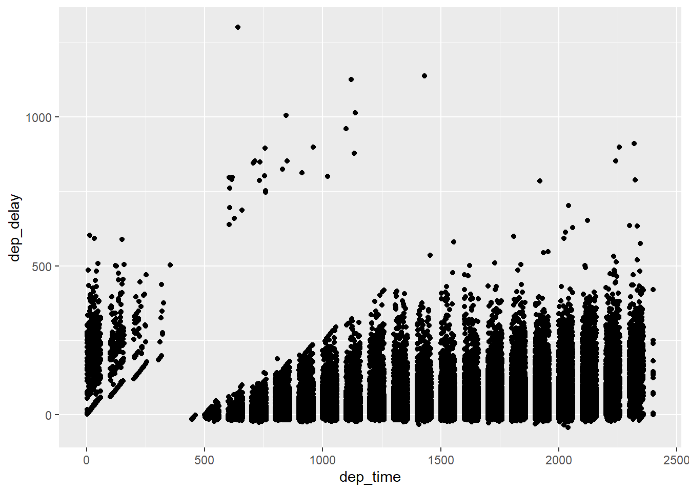
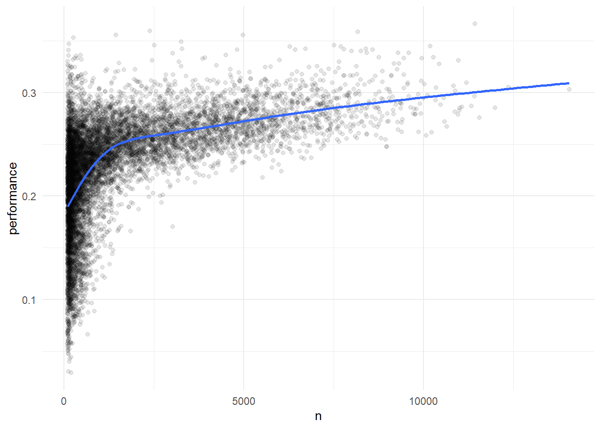

library(tidyverse)
library(nycflights13)
flights <- flightsdplyr
Основы dplyr_(R4DS_глава 4)
https://r4ds.hadley.nz/data-transform
Для отображения всех столбцов можно использовать: glimpse(flights)
Глаголы dplyr организованы в четыре группы в зависимости от того, с чем они работают: с строками, столбцами, группами или таблицами. В следующих разделах вы узнаете наиболее важные глаголы для строк, столбцов и групп, затем мы вернемся к глаголам объединения, которые работают с таблицами в главе 20. Давайте углубимся!
1. Строки
Наиболее важными глаголами, которые работают со строками набора данных, являются filter(), которые изменяют, какие строки присутствуют, без изменения их порядка, и arrange(), которые изменяют порядок строк, не изменяя, какие из них присутствуют. Обе функции влияют только на строки, а столбцы остаются неизменными. Мы также обсудим, distinct() которая находит строки с уникальными значениями, но непохожими arrange() и filter() она также может при необходимости изменять столбцы.
1.1 filter()
filter() позволяет сохранять строки на основе значений столбцов. Первый аргумент - это фрейм данных. Второй и последующие аргументы - это условия, которые должны быть истинными для сохранения строки. Например, мы могли бы найти все рейсы, которые вылетели с опозданием более чем на 120 минут (два часа):
flights %>%
filter(dep_delay > 120)# A tibble: 9,723 × 19
year month day dep_time sched_dep_time dep_delay arr_time sched_arr_time
<int> <int> <int> <int> <int> <dbl> <int> <int>
1 2013 1 1 848 1835 853 1001 1950
2 2013 1 1 957 733 144 1056 853
3 2013 1 1 1114 900 134 1447 1222
4 2013 1 1 1540 1338 122 2020 1825
5 2013 1 1 1815 1325 290 2120 1542
6 2013 1 1 1842 1422 260 1958 1535
7 2013 1 1 1856 1645 131 2212 2005
8 2013 1 1 1934 1725 129 2126 1855
9 2013 1 1 1938 1703 155 2109 1823
10 2013 1 1 1942 1705 157 2124 1830
# ℹ 9,713 more rows
# ℹ 11 more variables: arr_delay <dbl>, carrier <chr>, flight <int>,
# tailnum <chr>, origin <chr>, dest <chr>, air_time <dbl>, distance <dbl>,
# hour <dbl>, minute <dbl>, time_hour <dttm>При объединении есть полезный ярлык | и ==: %in%. Он сохраняет строки, в которых переменная равна одному из значений справа:
flights |>
filter(month %in% c(1, 2))# A tibble: 51,955 × 19
year month day dep_time sched_dep_time dep_delay arr_time sched_arr_time
<int> <int> <int> <int> <int> <dbl> <int> <int>
1 2013 1 1 517 515 2 830 819
2 2013 1 1 533 529 4 850 830
3 2013 1 1 542 540 2 923 850
4 2013 1 1 544 545 -1 1004 1022
5 2013 1 1 554 600 -6 812 837
6 2013 1 1 554 558 -4 740 728
7 2013 1 1 555 600 -5 913 854
8 2013 1 1 557 600 -3 709 723
9 2013 1 1 557 600 -3 838 846
10 2013 1 1 558 600 -2 753 745
# ℹ 51,945 more rows
# ℹ 11 more variables: arr_delay <dbl>, carrier <chr>, flight <int>,
# tailnum <chr>, origin <chr>, dest <chr>, air_time <dbl>, distance <dbl>,
# hour <dbl>, minute <dbl>, time_hour <dttm>Распространенные ошибки при использовании filter()
Когда вы начинаете с R, самая простая ошибка, которую можно совершить, - использовать
=вместо==при проверке на равенствоЕще одна ошибка заключается в том, что вы пишете утверждения типа “или”, как вы бы делали на английском:
flights |>
filter(month == 1 | 2)# A tibble: 336,776 × 19
year month day dep_time sched_dep_time dep_delay arr_time sched_arr_time
<int> <int> <int> <int> <int> <dbl> <int> <int>
1 2013 1 1 517 515 2 830 819
2 2013 1 1 533 529 4 850 830
3 2013 1 1 542 540 2 923 850
4 2013 1 1 544 545 -1 1004 1022
5 2013 1 1 554 600 -6 812 837
6 2013 1 1 554 558 -4 740 728
7 2013 1 1 555 600 -5 913 854
8 2013 1 1 557 600 -3 709 723
9 2013 1 1 557 600 -3 838 846
10 2013 1 1 558 600 -2 753 745
# ℹ 336,766 more rows
# ℹ 11 more variables: arr_delay <dbl>, carrier <chr>, flight <int>,
# tailnum <chr>, origin <chr>, dest <chr>, air_time <dbl>, distance <dbl>,
# hour <dbl>, minute <dbl>, time_hour <dttm>Это “работает” в том смысле, что не выдает ошибку, но и не делает того, что вы хотите, потому что | сначала проверяется условие month == 1, а затем проверяется условие 2, которое проверять нецелесообразно. Мы узнаем больше о том, что здесь происходит и почему, в разделе 16.6.2.
flights |>
filter(month == 1 | month == 2)# A tibble: 51,955 × 19
year month day dep_time sched_dep_time dep_delay arr_time sched_arr_time
<int> <int> <int> <int> <int> <dbl> <int> <int>
1 2013 1 1 517 515 2 830 819
2 2013 1 1 533 529 4 850 830
3 2013 1 1 542 540 2 923 850
4 2013 1 1 544 545 -1 1004 1022
5 2013 1 1 554 600 -6 812 837
6 2013 1 1 554 558 -4 740 728
7 2013 1 1 555 600 -5 913 854
8 2013 1 1 557 600 -3 709 723
9 2013 1 1 557 600 -3 838 846
10 2013 1 1 558 600 -2 753 745
# ℹ 51,945 more rows
# ℹ 11 more variables: arr_delay <dbl>, carrier <chr>, flight <int>,
# tailnum <chr>, origin <chr>, dest <chr>, air_time <dbl>, distance <dbl>,
# hour <dbl>, minute <dbl>, time_hour <dttm>1.2 arrange()
arrange() изменяет порядок строк на основе значений столбцов. Для упорядочивания требуется фрейм данных и набор имен столбцов (или более сложных выражений). Если вы укажете более одного имени столбца, каждый дополнительный столбец будет использоваться для разрыва связей в значениях предыдущих столбцов. Например, следующий код сортируется по времени отправки, которое распределено по четырем столбцам. Сначала мы получаем самые ранние годы, затем в течение года - самые ранние месяцы и т.д.
flights |>
arrange(year, month, day, dep_time)# A tibble: 336,776 × 19
year month day dep_time sched_dep_time dep_delay arr_time sched_arr_time
<int> <int> <int> <int> <int> <dbl> <int> <int>
1 2013 1 1 517 515 2 830 819
2 2013 1 1 533 529 4 850 830
3 2013 1 1 542 540 2 923 850
4 2013 1 1 544 545 -1 1004 1022
5 2013 1 1 554 600 -6 812 837
6 2013 1 1 554 558 -4 740 728
7 2013 1 1 555 600 -5 913 854
8 2013 1 1 557 600 -3 709 723
9 2013 1 1 557 600 -3 838 846
10 2013 1 1 558 600 -2 753 745
# ℹ 336,766 more rows
# ℹ 11 more variables: arr_delay <dbl>, carrier <chr>, flight <int>,
# tailnum <chr>, origin <chr>, dest <chr>, air_time <dbl>, distance <dbl>,
# hour <dbl>, minute <dbl>, time_hour <dttm>Вы можете использовать desc() для столбца внутри arrange(), чтобы изменить порядок фрейма данных на основе этого столбца в порядке убывания (от большого к малому). Например, этот код упорядочивает рейсы с наибольшей задержкой на наименьшую:
flights |>
arrange(desc(dep_delay))# A tibble: 336,776 × 19
year month day dep_time sched_dep_time dep_delay arr_time sched_arr_time
<int> <int> <int> <int> <int> <dbl> <int> <int>
1 2013 1 9 641 900 1301 1242 1530
2 2013 6 15 1432 1935 1137 1607 2120
3 2013 1 10 1121 1635 1126 1239 1810
4 2013 9 20 1139 1845 1014 1457 2210
5 2013 7 22 845 1600 1005 1044 1815
6 2013 4 10 1100 1900 960 1342 2211
7 2013 3 17 2321 810 911 135 1020
8 2013 6 27 959 1900 899 1236 2226
9 2013 7 22 2257 759 898 121 1026
10 2013 12 5 756 1700 896 1058 2020
# ℹ 336,766 more rows
# ℹ 11 more variables: arr_delay <dbl>, carrier <chr>, flight <int>,
# tailnum <chr>, origin <chr>, dest <chr>, air_time <dbl>, distance <dbl>,
# hour <dbl>, minute <dbl>, time_hour <dttm>1.3 distinct()
distinct() находит все уникальные строки в наборе данных, поэтому в техническом смысле он в основном работает со строками. Однако в большинстве случаев вам потребуется различная комбинация некоторых переменных, поэтому вы также можете дополнительно указать имена столбцов:
# Remove duplicate rows, if any
flights |>
distinct()# A tibble: 336,776 × 19
year month day dep_time sched_dep_time dep_delay arr_time sched_arr_time
<int> <int> <int> <int> <int> <dbl> <int> <int>
1 2013 1 1 517 515 2 830 819
2 2013 1 1 533 529 4 850 830
3 2013 1 1 542 540 2 923 850
4 2013 1 1 544 545 -1 1004 1022
5 2013 1 1 554 600 -6 812 837
6 2013 1 1 554 558 -4 740 728
7 2013 1 1 555 600 -5 913 854
8 2013 1 1 557 600 -3 709 723
9 2013 1 1 557 600 -3 838 846
10 2013 1 1 558 600 -2 753 745
# ℹ 336,766 more rows
# ℹ 11 more variables: arr_delay <dbl>, carrier <chr>, flight <int>,
# tailnum <chr>, origin <chr>, dest <chr>, air_time <dbl>, distance <dbl>,
# hour <dbl>, minute <dbl>, time_hour <dttm># Find all unique origin and destination pairs
flights |>
distinct(origin, dest)# A tibble: 224 × 2
origin dest
<chr> <chr>
1 EWR IAH
2 LGA IAH
3 JFK MIA
4 JFK BQN
5 LGA ATL
6 EWR ORD
7 EWR FLL
8 LGA IAD
9 JFK MCO
10 LGA ORD
# ℹ 214 more rowsВ качестве альтернативы, если вы хотите сохранить другие столбцы при фильтрации по уникальным строкам, вы можете использовать .keep_all = TRUE опцию.
flights |>
distinct(origin, dest, .keep_all = TRUE)# A tibble: 224 × 19
year month day dep_time sched_dep_time dep_delay arr_time sched_arr_time
<int> <int> <int> <int> <int> <dbl> <int> <int>
1 2013 1 1 517 515 2 830 819
2 2013 1 1 533 529 4 850 830
3 2013 1 1 542 540 2 923 850
4 2013 1 1 544 545 -1 1004 1022
5 2013 1 1 554 600 -6 812 837
6 2013 1 1 554 558 -4 740 728
7 2013 1 1 555 600 -5 913 854
8 2013 1 1 557 600 -3 709 723
9 2013 1 1 557 600 -3 838 846
10 2013 1 1 558 600 -2 753 745
# ℹ 214 more rows
# ℹ 11 more variables: arr_delay <dbl>, carrier <chr>, flight <int>,
# tailnum <chr>, origin <chr>, dest <chr>, air_time <dbl>, distance <dbl>,
# hour <dbl>, minute <dbl>, time_hour <dttm>Не случайно, что все эти отдельные рейсы выполняются 1 января: distinct() найдет первое вхождение уникальной строки в наборе данных и отбросит остальные.
Если вы хотите вместо этого найти количество вхождений, вам лучше поменять местами distinct() на count(), и с sort = TRUE аргументом вы можете расположить их в порядке убывания количества вхождений. Вы узнаете больше о count в разделе 14.3.
flights |>
count(origin, dest, sort = TRUE)# A tibble: 224 × 3
origin dest n
<chr> <chr> <int>
1 JFK LAX 11262
2 LGA ATL 10263
3 LGA ORD 8857
4 JFK SFO 8204
5 LGA CLT 6168
6 EWR ORD 6100
7 JFK BOS 5898
8 LGA MIA 5781
9 JFK MCO 5464
10 EWR BOS 5327
# ℹ 214 more rowsУпражнения
В одном конвейере для каждого условия найдите все рейсы, которые соответствуют условию:
Произошла задержка прибытия на два или более часа
Вылетел в Хьюстон (
IAHилиHOU)Управлялись United, American или Delta
Отбыл летом (июль, август и сентябрь)
Прибыл с опозданием более чем на два часа, но не ушел поздно
Были отложены как минимум на час, но составили более 30 минут в полете
Сортировка
flightsдля поиска рейсов с наибольшими задержками вылета. Найдите рейсы, которые вылетали самым ранним утром.Сортировка
flightsдля поиска самых быстрых рейсов. (Подсказка: попробуйте включить математические вычисления внутри вашей функции.)Был ли рейс в каждый день 2013 года?
На каких рейсах было пройдено наибольшее расстояние? На каких пройдено наименьшее расстояние?
Имеет ли значение, какой порядок вы использовали
filter()иarrange()используете ли вы оба? Почему / почему бы и нет? Подумайте о результатах и о том, сколько работы пришлось бы выполнять функциям.In a single pipeline for each condition, find all flights that meet the condition:
Had an arrival delay of two or more hours
Flew to Houston (
IAHorHOU)Were operated by United, American, or Delta
Departed in summer (July, August, and September)
Arrived more than two hours late, but didn’t leave late
Were delayed by at least an hour, but made up over 30 minutes in flight
flights %>%
filter(arr_delay >= 2 & dest %in% c('IAH','HOU'))# A tibble: 3,627 × 19
year month day dep_time sched_dep_time dep_delay arr_time sched_arr_time
<int> <int> <int> <int> <int> <dbl> <int> <int>
1 2013 1 1 517 515 2 830 819
2 2013 1 1 533 529 4 850 830
3 2013 1 1 728 732 -4 1041 1038
4 2013 1 1 739 739 0 1104 1038
5 2013 1 1 908 908 0 1228 1219
6 2013 1 1 1028 1026 2 1350 1339
7 2013 1 1 1114 900 134 1447 1222
8 2013 1 1 1208 1158 10 1540 1502
9 2013 1 1 1306 1300 6 1622 1610
10 2013 1 1 1356 1350 6 1659 1640
# ℹ 3,617 more rows
# ℹ 11 more variables: arr_delay <dbl>, carrier <chr>, flight <int>,
# tailnum <chr>, origin <chr>, dest <chr>, air_time <dbl>, distance <dbl>,
# hour <dbl>, minute <dbl>, time_hour <dttm>2. Sort `flights` to find the flights with longest departure delays. Find the flights that left earliest in the morning.
3. Sort `flights` to find the fastest flights. (Hint: Try including a math calculation inside of your function.)
4. Was there a flight on every day of 2013?
5. Which flights traveled the farthest distance? Which traveled the least distance?
6. Does it matter what order you used4.3 Столбцы
Есть четыре важных глагола, которые влияют на столбцы без изменения строк: mutate() создает новые столбцы, производные от существующих столбцов, select() изменяет, какие столбцы присутствуют, rename() изменяет названия столбцов и relocate() изменяет позиции столбцов.
4.3.1 mutate()
Задача mutate() заключается в добавлении новых столбцов, которые вычисляются на основе существующих столбцов. В главах о преобразовании вы познакомитесь с большим набором функций, которые можно использовать для управления различными типами переменных. На данный момент мы будем придерживаться базовой алгебры, которая позволяет нам вычислять gain, сколько времени задержанный рейс провел в воздухе, и speed в милях в час:
flights |>
mutate(
gain = dep_delay - arr_delay,
speed = distance / air_time * 60)# A tibble: 336,776 × 21
year month day dep_time sched_dep_time dep_delay arr_time sched_arr_time
<int> <int> <int> <int> <int> <dbl> <int> <int>
1 2013 1 1 517 515 2 830 819
2 2013 1 1 533 529 4 850 830
3 2013 1 1 542 540 2 923 850
4 2013 1 1 544 545 -1 1004 1022
5 2013 1 1 554 600 -6 812 837
6 2013 1 1 554 558 -4 740 728
7 2013 1 1 555 600 -5 913 854
8 2013 1 1 557 600 -3 709 723
9 2013 1 1 557 600 -3 838 846
10 2013 1 1 558 600 -2 753 745
# ℹ 336,766 more rows
# ℹ 13 more variables: arr_delay <dbl>, carrier <chr>, flight <int>,
# tailnum <chr>, origin <chr>, dest <chr>, air_time <dbl>, distance <dbl>,
# hour <dbl>, minute <dbl>, time_hour <dttm>, gain <dbl>, speed <dbl>По умолчанию mutate() добавляются новые столбцы в правой части вашего набора данных, что затрудняет понимание того, что здесь происходит. Вместо этого мы можем использовать .before аргумент для добавления переменных в левую часть:
flights |>
mutate(
gain = dep_delay - arr_delay,
speed = distance / air_time * 60,
.before = 1
)# A tibble: 336,776 × 21
gain speed year month day dep_time sched_dep_time dep_delay arr_time
<dbl> <dbl> <int> <int> <int> <int> <int> <dbl> <int>
1 -9 370. 2013 1 1 517 515 2 830
2 -16 374. 2013 1 1 533 529 4 850
3 -31 408. 2013 1 1 542 540 2 923
4 17 517. 2013 1 1 544 545 -1 1004
5 19 394. 2013 1 1 554 600 -6 812
6 -16 288. 2013 1 1 554 558 -4 740
7 -24 404. 2013 1 1 555 600 -5 913
8 11 259. 2013 1 1 557 600 -3 709
9 5 405. 2013 1 1 557 600 -3 838
10 -10 319. 2013 1 1 558 600 -2 753
# ℹ 336,766 more rows
# ℹ 12 more variables: sched_arr_time <int>, arr_delay <dbl>, carrier <chr>,
# flight <int>, tailnum <chr>, origin <chr>, dest <chr>, air_time <dbl>,
# distance <dbl>, hour <dbl>, minute <dbl>, time_hour <dttm>. Это знак, который .before является аргументом функции, а не именем третьей новой переменной, которую мы создаем. Вы также можете использовать .after для добавления после переменной, и в обоих .before и .after вы можете использовать имя переменной вместо позиции. Например, мы могли бы добавить новые переменные после day:
flights |>
mutate(
gain = dep_delay - arr_delay,
speed = distance / air_time * 60,
.after = day
)# A tibble: 336,776 × 21
year month day gain speed dep_time sched_dep_time dep_delay arr_time
<int> <int> <int> <dbl> <dbl> <int> <int> <dbl> <int>
1 2013 1 1 -9 370. 517 515 2 830
2 2013 1 1 -16 374. 533 529 4 850
3 2013 1 1 -31 408. 542 540 2 923
4 2013 1 1 17 517. 544 545 -1 1004
5 2013 1 1 19 394. 554 600 -6 812
6 2013 1 1 -16 288. 554 558 -4 740
7 2013 1 1 -24 404. 555 600 -5 913
8 2013 1 1 11 259. 557 600 -3 709
9 2013 1 1 5 405. 557 600 -3 838
10 2013 1 1 -10 319. 558 600 -2 753
# ℹ 336,766 more rows
# ℹ 12 more variables: sched_arr_time <int>, arr_delay <dbl>, carrier <chr>,
# flight <int>, tailnum <chr>, origin <chr>, dest <chr>, air_time <dbl>,
# distance <dbl>, hour <dbl>, minute <dbl>, time_hour <dttm>В качестве альтернативы вы можете управлять тем, какие переменные сохраняются с помощью .keep аргумента. Особенно полезным аргументом является тот, "used" который указывает, что мы сохраняем только столбцы, которые были задействованы или созданы на mutate() шаге. Например, следующий вывод будет содержать только переменные dep_delay, arr_delay, air_time gain, hours gain_per_hour, и,,,.
flights |>
mutate(
gain = dep_delay - arr_delay,
hours = air_time / 60,
gain_per_hour = gain / hours,
.keep = "used"
)# A tibble: 336,776 × 6
dep_delay arr_delay air_time gain hours gain_per_hour
<dbl> <dbl> <dbl> <dbl> <dbl> <dbl>
1 2 11 227 -9 3.78 -2.38
2 4 20 227 -16 3.78 -4.23
3 2 33 160 -31 2.67 -11.6
4 -1 -18 183 17 3.05 5.57
5 -6 -25 116 19 1.93 9.83
6 -4 12 150 -16 2.5 -6.4
7 -5 19 158 -24 2.63 -9.11
8 -3 -14 53 11 0.883 12.5
9 -3 -8 140 5 2.33 2.14
10 -2 8 138 -10 2.3 -4.35
# ℹ 336,766 more rowsОбратите внимание, что, поскольку мы не присвоили результат вышеуказанного вычисления обратно flights, новые переменные gain, hours, и gain_per_hour будут только напечатаны, но не будут сохранены во фрейме данных. И если мы хотим, чтобы они были доступны во фрейме данных для будущего использования, нам следует тщательно подумать о том, хотим ли мы, чтобы результат был присвоен обратно flights, перезаписав исходный фрейм данных большим количеством переменных, или новому объекту. Часто правильным ответом является новый объект, который назван информативно, чтобы указать на его содержимое, например, delay_gain, но у вас также могут быть веские причины для перезаписи flights.
4.3.2 select()
Нередко можно получить наборы данных с сотнями или даже тысячами переменных. В этой ситуации первая проблема часто заключается в том, чтобы просто сосредоточиться на интересующих вас переменных. select() позволяет быстро увеличить полезное подмножество, используя операции, основанные на именах переменных:
- Выберите столбцы по имени:
flights |>
select(year, month, day)# A tibble: 336,776 × 3
year month day
<int> <int> <int>
1 2013 1 1
2 2013 1 1
3 2013 1 1
4 2013 1 1
5 2013 1 1
6 2013 1 1
7 2013 1 1
8 2013 1 1
9 2013 1 1
10 2013 1 1
# ℹ 336,766 more rows- Выберите все столбцы между годом и днем (включительно):
flights |>
select(year:day)# A tibble: 336,776 × 3
year month day
<int> <int> <int>
1 2013 1 1
2 2013 1 1
3 2013 1 1
4 2013 1 1
5 2013 1 1
6 2013 1 1
7 2013 1 1
8 2013 1 1
9 2013 1 1
10 2013 1 1
# ℹ 336,766 more rows- Выберите все столбцы, кроме столбцов от года до дня (включительно):
flights |>
select(!year:day)# A tibble: 336,776 × 16
dep_time sched_dep_time dep_delay arr_time sched_arr_time arr_delay carrier
<int> <int> <dbl> <int> <int> <dbl> <chr>
1 517 515 2 830 819 11 UA
2 533 529 4 850 830 20 UA
3 542 540 2 923 850 33 AA
4 544 545 -1 1004 1022 -18 B6
5 554 600 -6 812 837 -25 DL
6 554 558 -4 740 728 12 UA
7 555 600 -5 913 854 19 B6
8 557 600 -3 709 723 -14 EV
9 557 600 -3 838 846 -8 B6
10 558 600 -2 753 745 8 AA
# ℹ 336,766 more rows
# ℹ 9 more variables: flight <int>, tailnum <chr>, origin <chr>, dest <chr>,
# air_time <dbl>, distance <dbl>, hour <dbl>, minute <dbl>, time_hour <dttm>Вы также можете использовать - вместо ! (и вы, вероятно, увидите это в дикой природе); мы рекомендуем !, потому что это читается как “не” и хорошо сочетается с & и |.
- Выберите все столбцы, которые являются символами:
flights |>
select(where(is.character))# A tibble: 336,776 × 4
carrier tailnum origin dest
<chr> <chr> <chr> <chr>
1 UA N14228 EWR IAH
2 UA N24211 LGA IAH
3 AA N619AA JFK MIA
4 B6 N804JB JFK BQN
5 DL N668DN LGA ATL
6 UA N39463 EWR ORD
7 B6 N516JB EWR FLL
8 EV N829AS LGA IAD
9 B6 N593JB JFK MCO
10 AA N3ALAA LGA ORD
# ℹ 336,766 more rowsСуществует ряд вспомогательных функций, которые вы можете использовать в select():
starts_with("abc"): сопоставляет имена, начинающиеся с “abc”.ends_with("xyz"): сопоставляет имена, заканчивающиеся на “xyz”.contains("ijk"): сопоставляет имена, содержащие “ijk”.num_range("x", 1:3): совпаденияx1,x2иx3.
Подробнее см. ?select. Как только вы освоите регулярные выражения (тема главы 16), вы также сможете использовать их matches() для выбора переменных, соответствующих шаблону.
Вы можете переименовывать переменные по своему select() усмотрению, используя =. Новое имя отображается в левой части =, а старая переменная - в правой части:
flights |>
select(tail_num = tailnum)# A tibble: 336,776 × 1
tail_num
<chr>
1 N14228
2 N24211
3 N619AA
4 N804JB
5 N668DN
6 N39463
7 N516JB
8 N829AS
9 N593JB
10 N3ALAA
# ℹ 336,766 more rows4.3.3 rename()
Если вы хотите сохранить все существующие переменные и просто хотите переименовать несколько, вы можете использовать rename() вместо select():
flights |>
rename(tail_num = tailnum)# A tibble: 336,776 × 19
year month day dep_time sched_dep_time dep_delay arr_time sched_arr_time
<int> <int> <int> <int> <int> <dbl> <int> <int>
1 2013 1 1 517 515 2 830 819
2 2013 1 1 533 529 4 850 830
3 2013 1 1 542 540 2 923 850
4 2013 1 1 544 545 -1 1004 1022
5 2013 1 1 554 600 -6 812 837
6 2013 1 1 554 558 -4 740 728
7 2013 1 1 555 600 -5 913 854
8 2013 1 1 557 600 -3 709 723
9 2013 1 1 557 600 -3 838 846
10 2013 1 1 558 600 -2 753 745
# ℹ 336,766 more rows
# ℹ 11 more variables: arr_delay <dbl>, carrier <chr>, flight <int>,
# tail_num <chr>, origin <chr>, dest <chr>, air_time <dbl>, distance <dbl>,
# hour <dbl>, minute <dbl>, time_hour <dttm>Если у вас есть куча столбцов с непоследовательными именами, и было бы больно исправлять их все вручную, ознакомьтесь с janitor::clean_names(), который обеспечивает некоторую полезную автоматическую очистку.
4.3.4 relocate()
Используется relocate() для перемещения переменных. Возможно, вам захочется собрать связанные переменные вместе или переместить важные переменные вперед. По умолчанию relocate() переменные перемещаются вперед:
flights |>
relocate(time_hour, air_time)# A tibble: 336,776 × 19
time_hour air_time year month day dep_time sched_dep_time
<dttm> <dbl> <int> <int> <int> <int> <int>
1 2013-01-01 05:00:00 227 2013 1 1 517 515
2 2013-01-01 05:00:00 227 2013 1 1 533 529
3 2013-01-01 05:00:00 160 2013 1 1 542 540
4 2013-01-01 05:00:00 183 2013 1 1 544 545
5 2013-01-01 06:00:00 116 2013 1 1 554 600
6 2013-01-01 05:00:00 150 2013 1 1 554 558
7 2013-01-01 06:00:00 158 2013 1 1 555 600
8 2013-01-01 06:00:00 53 2013 1 1 557 600
9 2013-01-01 06:00:00 140 2013 1 1 557 600
10 2013-01-01 06:00:00 138 2013 1 1 558 600
# ℹ 336,766 more rows
# ℹ 12 more variables: dep_delay <dbl>, arr_time <int>, sched_arr_time <int>,
# arr_delay <dbl>, carrier <chr>, flight <int>, tailnum <chr>, origin <chr>,
# dest <chr>, distance <dbl>, hour <dbl>, minute <dbl>Вы также можете указать, куда их поместить, используя аргументы .before и .after, точно так же, как в mutate():
flights |>
relocate(year:dep_time, .after = time_hour)# A tibble: 336,776 × 19
sched_dep_time dep_delay arr_time sched_arr_time arr_delay carrier flight
<int> <dbl> <int> <int> <dbl> <chr> <int>
1 515 2 830 819 11 UA 1545
2 529 4 850 830 20 UA 1714
3 540 2 923 850 33 AA 1141
4 545 -1 1004 1022 -18 B6 725
5 600 -6 812 837 -25 DL 461
6 558 -4 740 728 12 UA 1696
7 600 -5 913 854 19 B6 507
8 600 -3 709 723 -14 EV 5708
9 600 -3 838 846 -8 B6 79
10 600 -2 753 745 8 AA 301
# ℹ 336,766 more rows
# ℹ 12 more variables: tailnum <chr>, origin <chr>, dest <chr>, air_time <dbl>,
# distance <dbl>, hour <dbl>, minute <dbl>, time_hour <dttm>, year <int>,
# month <int>, day <int>, dep_time <int>flights |>
relocate(starts_with("arr"), .before = dep_time)# A tibble: 336,776 × 19
year month day arr_time arr_delay dep_time sched_dep_time dep_delay
<int> <int> <int> <int> <dbl> <int> <int> <dbl>
1 2013 1 1 830 11 517 515 2
2 2013 1 1 850 20 533 529 4
3 2013 1 1 923 33 542 540 2
4 2013 1 1 1004 -18 544 545 -1
5 2013 1 1 812 -25 554 600 -6
6 2013 1 1 740 12 554 558 -4
7 2013 1 1 913 19 555 600 -5
8 2013 1 1 709 -14 557 600 -3
9 2013 1 1 838 -8 557 600 -3
10 2013 1 1 753 8 558 600 -2
# ℹ 336,766 more rows
# ℹ 11 more variables: sched_arr_time <int>, carrier <chr>, flight <int>,
# tailnum <chr>, origin <chr>, dest <chr>, air_time <dbl>, distance <dbl>,
# hour <dbl>, minute <dbl>, time_hour <dttm>4.3.5 Упражнения
Сравните
dep_time(время отправления),sched_dep_time(заплан. время отправления)иdep_delay(задержка вылета). Как бы вы ожидали, что эти три числа будут связаны?select_flights <- flights %>% select(dep_time, sched_dep_time, dep_delay) select_flights %>% ggplot(aes(x = dep_time, y = dep_delay))+ geom_point(na.rm = TRUE)
Проведите мозговой штурм как можно большим количеством способов выбора
dep_time,dep_delayarr_timeиarr_delayизflights.Что произойдет, если вы укажете имя одной и той же переменной несколько раз в
select()вызове?flights %>% select(dep_delay, dep_delay)# A tibble: 336,776 × 1 dep_delay <dbl> 1 2 2 4 3 2 4 -1 5 -6 6 -4 7 -5 8 -3 9 -3 10 -2 # ℹ 336,766 more rowsЧто делает
any_of()функция? Почему она может быть полезна в сочетании с этим вектором?variables <- c("year", "month", "day", "dep_delay", "arr_delay") variables[1] "year" "month" "day" "dep_delay" "arr_delay"Удивляет ли вас результат выполнения следующего кода? Как помощники по выбору обрабатывают верхний и нижний регистры по умолчанию? Как вы можете изменить это значение по умолчанию?
flights |> select(contains("TIME"))# A tibble: 336,776 × 6 dep_time sched_dep_time arr_time sched_arr_time air_time time_hour <int> <int> <int> <int> <dbl> <dttm> 1 517 515 830 819 227 2013-01-01 05:00:00 2 533 529 850 830 227 2013-01-01 05:00:00 3 542 540 923 850 160 2013-01-01 05:00:00 4 544 545 1004 1022 183 2013-01-01 05:00:00 5 554 600 812 837 116 2013-01-01 06:00:00 6 554 558 740 728 150 2013-01-01 05:00:00 7 555 600 913 854 158 2013-01-01 06:00:00 8 557 600 709 723 53 2013-01-01 06:00:00 9 557 600 838 846 140 2013-01-01 06:00:00 10 558 600 753 745 138 2013-01-01 06:00:00 # ℹ 336,766 more rowsПереименуйте
air_timeвair_time_minдля обозначения единиц измерения и переместите его в начало фрейма данных.flights %>% rename(air_time_min = air_time) %>% relocate(air_time_min)# A tibble: 336,776 × 19 air_time_min year month day dep_time sched_dep_time dep_delay arr_time <dbl> <int> <int> <int> <int> <int> <dbl> <int> 1 227 2013 1 1 517 515 2 830 2 227 2013 1 1 533 529 4 850 3 160 2013 1 1 542 540 2 923 4 183 2013 1 1 544 545 -1 1004 5 116 2013 1 1 554 600 -6 812 6 150 2013 1 1 554 558 -4 740 7 158 2013 1 1 555 600 -5 913 8 53 2013 1 1 557 600 -3 709 9 140 2013 1 1 557 600 -3 838 10 138 2013 1 1 558 600 -2 753 # ℹ 336,766 more rows # ℹ 11 more variables: sched_arr_time <int>, arr_delay <dbl>, carrier <chr>, # flight <int>, tailnum <chr>, origin <chr>, dest <chr>, distance <dbl>, # hour <dbl>, minute <dbl>, time_hour <dttm>
4.4 Канал (the pipe)
Мы показали вам простые примеры канала выше, но его реальная сила проявляется, когда вы начинаете комбинировать несколько глаголов. Например, представьте, что вы хотели найти быстрые рейсы в аэропорт IAH в Хьюстоне: вам нужно объединить filter(), mutate(), select() и arrange():
flights |>
filter(dest == "IAH") |>
mutate(speed = distance / air_time * 60) |>
select(year:day, dep_time, carrier, flight, speed) |>
arrange(desc(speed))# A tibble: 7,198 × 7
year month day dep_time carrier flight speed
<int> <int> <int> <int> <chr> <int> <dbl>
1 2013 7 9 707 UA 226 522.
2 2013 8 27 1850 UA 1128 521.
3 2013 8 28 902 UA 1711 519.
4 2013 8 28 2122 UA 1022 519.
5 2013 6 11 1628 UA 1178 515.
6 2013 8 27 1017 UA 333 515.
7 2013 8 27 1205 UA 1421 515.
8 2013 8 27 1758 UA 302 515.
9 2013 9 27 521 UA 252 515.
10 2013 8 28 625 UA 559 515.
# ℹ 7,188 more rowsНесмотря на то, что этот конвейер состоит из четырех этапов, его легко просмотреть, потому что глаголы появляются в начале каждой строки: начните с flights данных, затем фильтруйте, затем изменяйте, затем выбирайте, затем упорядочивайте.
4.5 Группы
На данный момент вы узнали о функциях, которые работают со строками и столбцами. dplyr становится еще мощнее, когда вы добавляете возможность работы с группами. В этом разделе мы сосредоточимся на наиболее важных функциях: group_by(), summarize() и семействе функций slice.
4.5.1 group_by()
Используйте group_by() для разделения вашего набора данных на группы, значимые для вашего анализа:
flights |>
group_by(month)# A tibble: 336,776 × 19
# Groups: month [12]
year month day dep_time sched_dep_time dep_delay arr_time sched_arr_time
<int> <int> <int> <int> <int> <dbl> <int> <int>
1 2013 1 1 517 515 2 830 819
2 2013 1 1 533 529 4 850 830
3 2013 1 1 542 540 2 923 850
4 2013 1 1 544 545 -1 1004 1022
5 2013 1 1 554 600 -6 812 837
6 2013 1 1 554 558 -4 740 728
7 2013 1 1 555 600 -5 913 854
8 2013 1 1 557 600 -3 709 723
9 2013 1 1 557 600 -3 838 846
10 2013 1 1 558 600 -2 753 745
# ℹ 336,766 more rows
# ℹ 11 more variables: arr_delay <dbl>, carrier <chr>, flight <int>,
# tailnum <chr>, origin <chr>, dest <chr>, air_time <dbl>, distance <dbl>,
# hour <dbl>, minute <dbl>, time_hour <dttm>group_by() данные не изменяются, но, если вы внимательно посмотрите на выходные данные, вы заметите, что выходные данные указывают на то, что они “сгруппированы по”месяцам (Groups: month [12]). Это означает, что последующие операции теперь будут выполняться “по месяцам”. group_by() добавляет этот сгруппированный признак (называемый классом) во фрейм данных, который изменяет поведение последующих глаголов, применяемых к данным.
4.5.2 summarize()
Наиболее важной операцией группировки является сводка, которая, если используется для вычисления одной сводной статистики, сокращает фрейм данных до одной строки для каждой группы. В dplyr эта операция выполняется с помощью summarize(), как показано в следующем примере, который вычисляет среднюю задержку отправления по месяцам:
flights |>
group_by(month) |>
summarize(
avg_delay = mean(dep_delay, na.rm = TRUE)
)# A tibble: 12 × 2
month avg_delay
<int> <dbl>
1 1 10.0
2 2 10.8
3 3 13.2
4 4 13.9
5 5 13.0
6 6 20.8
7 7 21.7
8 8 12.6
9 9 6.72
10 10 6.24
11 11 5.44
12 12 16.6 Вы можете создать любое количество сводок за один вызов summarize(). В следующих главах вы познакомитесь с различными полезными сводками, но одна очень полезная сводка - это n(), которая возвращает количество строк в каждой группе:
flights |>
group_by(month) |>
summarize(
delay = mean(dep_delay, na.rm = TRUE),
n = n()
)# A tibble: 12 × 3
month delay n
<int> <dbl> <int>
1 1 10.0 27004
2 2 10.8 24951
3 3 13.2 28834
4 4 13.9 28330
5 5 13.0 28796
6 6 20.8 28243
7 7 21.7 29425
8 8 12.6 29327
9 9 6.72 27574
10 10 6.24 28889
11 11 5.44 27268
12 12 16.6 28135Средства и подсчеты могут помочь вам пройти удивительно долгий путь в науке о данных!
4.5.3 slice_ функции
Существует пять удобных функций, которые позволяют извлекать определенные строки внутри каждой группы:
df |> slice_head(n = 1)используется первая строка из каждой группы.df |> slice_tail(n = 1)занимает последнюю строку в каждой группе.df |> slice_min(x, n = 1)принимает строку с наименьшим значением столбцаx.df |> slice_max(x, n = 1)принимает строку с наибольшим значением столбцаx.df |> slice_sample(n = 1)используется одна случайная строка.
Вы можете изменить n, чтобы выбрать более одной строки, или вместо этого n = вы можете использовать prop = 0.1 для выбора (например) 10% строк в каждой группе. Например, следующий код позволяет найти рейсы, которые чаще всего задерживаются по прибытии в каждый пункт назначения:
flights |>
group_by(dest) |>
slice_max(arr_delay, n = 1) |>
relocate(dest)# A tibble: 108 × 19
# Groups: dest [105]
dest year month day dep_time sched_dep_time dep_delay arr_time
<chr> <int> <int> <int> <int> <int> <dbl> <int>
1 ABQ 2013 7 22 2145 2007 98 132
2 ACK 2013 7 23 1139 800 219 1250
3 ALB 2013 1 25 123 2000 323 229
4 ANC 2013 8 17 1740 1625 75 2042
5 ATL 2013 7 22 2257 759 898 121
6 AUS 2013 7 10 2056 1505 351 2347
7 AVL 2013 8 13 1156 832 204 1417
8 BDL 2013 2 21 1728 1316 252 1839
9 BGR 2013 12 1 1504 1056 248 1628
10 BHM 2013 4 10 25 1900 325 136
# ℹ 98 more rows
# ℹ 11 more variables: sched_arr_time <int>, arr_delay <dbl>, carrier <chr>,
# flight <int>, tailnum <chr>, origin <chr>, air_time <dbl>, distance <dbl>,
# hour <dbl>, minute <dbl>, time_hour <dttm>Обратите внимание, что есть 105 пунктов назначения, но здесь мы получаем 108 строк. В чем дело? slice_min() и slice_max() сохранить привязанные значения, чтобы n = 1 это означало предоставить нам все строки с наибольшим значением. Если вам нужна ровно одна строка для каждой группы, вы можете задатьwith_ties = FALSE.
Это похоже на вычисление максимальной задержки с помощью summarize(), но вы получаете всю соответствующую строку (или строки, если есть связь) вместо отдельной сводной статистики.
4.5.4 Группировка по нескольким переменным
Вы можете создавать группы, используя более одной переменной. Например, мы могли бы создать группу для каждой даты.
daily <- flights |>
group_by(year, month, day)
daily# A tibble: 336,776 × 19
# Groups: year, month, day [365]
year month day dep_time sched_dep_time dep_delay arr_time sched_arr_time
<int> <int> <int> <int> <int> <dbl> <int> <int>
1 2013 1 1 517 515 2 830 819
2 2013 1 1 533 529 4 850 830
3 2013 1 1 542 540 2 923 850
4 2013 1 1 544 545 -1 1004 1022
5 2013 1 1 554 600 -6 812 837
6 2013 1 1 554 558 -4 740 728
7 2013 1 1 555 600 -5 913 854
8 2013 1 1 557 600 -3 709 723
9 2013 1 1 557 600 -3 838 846
10 2013 1 1 558 600 -2 753 745
# ℹ 336,766 more rows
# ℹ 11 more variables: arr_delay <dbl>, carrier <chr>, flight <int>,
# tailnum <chr>, origin <chr>, dest <chr>, air_time <dbl>, distance <dbl>,
# hour <dbl>, minute <dbl>, time_hour <dttm>Когда вы суммируете данные, сгруппированные по нескольким переменным, каждая сводка отслаивается от последней группы. Оглядываясь назад, это был не лучший способ заставить эту функцию работать, но ее трудно изменить, не нарушая существующий код. Чтобы было понятно, что происходит, dplyr отображает сообщение, в котором рассказывается, как вы можете изменить это поведение:
Если вас устраивает такое поведение, вы можете явно запросить его, чтобы подавить сообщение:
daily_flights <- daily |>
summarize(
n = n(),
.groups = "drop_last"
)В качестве альтернативы, измените поведение по умолчанию, установив другое значение, например, "drop" для удаления всех группировок или "keep" для сохранения тех же групп.
4.5.5 Разгруппировка
Вы также можете захотеть удалить группировку из фрейма данных без использования summarize(). Вы можете сделать это с помощью ungroup().
daily |>
ungroup()# A tibble: 336,776 × 19
year month day dep_time sched_dep_time dep_delay arr_time sched_arr_time
<int> <int> <int> <int> <int> <dbl> <int> <int>
1 2013 1 1 517 515 2 830 819
2 2013 1 1 533 529 4 850 830
3 2013 1 1 542 540 2 923 850
4 2013 1 1 544 545 -1 1004 1022
5 2013 1 1 554 600 -6 812 837
6 2013 1 1 554 558 -4 740 728
7 2013 1 1 555 600 -5 913 854
8 2013 1 1 557 600 -3 709 723
9 2013 1 1 557 600 -3 838 846
10 2013 1 1 558 600 -2 753 745
# ℹ 336,766 more rows
# ℹ 11 more variables: arr_delay <dbl>, carrier <chr>, flight <int>,
# tailnum <chr>, origin <chr>, dest <chr>, air_time <dbl>, distance <dbl>,
# hour <dbl>, minute <dbl>, time_hour <dttm>Теперь давайте посмотрим, что происходит, когда вы суммируете негруппированный фрейм данных.
daily |>
ungroup() |>
summarize(
avg_delay = mean(dep_delay, na.rm = TRUE),
flights = n()
)# A tibble: 1 × 2
avg_delay flights
<dbl> <int>
1 12.6 336776Вы получаете обратно одну строку, потому что dplyr обрабатывает все строки в негруппированном фрейме данных как принадлежащие к одной группе.
4.5.6 .by
dplyr 1.1.0 включает в себя новый, экспериментальный синтаксис для группировки по операциям, .by аргумент. group_by() и ungroup() никуда не денутся, но теперь вы также можете использовать .by аргумент для группировки в рамках одной операции:
flights |>
summarize(
delay = mean(dep_delay, na.rm = TRUE),
n = n(),
.by = month
)# A tibble: 12 × 3
month delay n
<int> <dbl> <int>
1 1 10.0 27004
2 10 6.24 28889
3 11 5.44 27268
4 12 16.6 28135
5 2 10.8 24951
6 3 13.2 28834
7 4 13.9 28330
8 5 13.0 28796
9 6 20.8 28243
10 7 21.7 29425
11 8 12.6 29327
12 9 6.72 27574Или, если вы хотите сгруппировать по нескольким переменным:
flights |>
summarize(
delay = mean(dep_delay, na.rm = TRUE),
n = n(),
.by = c(origin, dest)
)# A tibble: 224 × 4
origin dest delay n
<chr> <chr> <dbl> <int>
1 EWR IAH 11.8 3973
2 LGA IAH 9.06 2951
3 JFK MIA 9.34 3314
4 JFK BQN 6.67 599
5 LGA ATL 11.4 10263
6 EWR ORD 14.6 6100
7 EWR FLL 13.5 3793
8 LGA IAD 16.7 1803
9 JFK MCO 10.6 5464
10 LGA ORD 10.7 8857
# ℹ 214 more rows.by работает со всеми глаголами и имеет то преимущество, что вам не нужно использовать .groups аргумент для подавления группирующего сообщения или ungroup() когда вы закончите.
Мы не фокусировались на этом синтаксисе в этой главе, потому что он был очень новым, когда мы писали книгу. Мы хотели упомянуть о нем, потому что считаем, что он многообещающий и, вероятно, будет довольно популярным. Вы можете узнать больше об этом в сообщении в блоге dplyr 1.1.0.
4.6 Тематическое исследование: агрегированные данные и размер выборки
Всякий раз, когда вы выполняете какую-либо агрегацию, всегда полезно включать количество (n()). Таким образом, вы можете быть уверены, что не делаете выводов на основе очень небольших объемов данных. Мы продемонстрируем это на примере некоторых бейсбольных данных из пакета Lahman. В частности, мы сравним, сколько раз игрок получает удар (H) по сравнению с количеством попыток ввести мяч в игру (AB):
library(Lahman)
batters <- Lahman::Batting |>
group_by(playerID) |>
summarize(
performance = sum(H, na.rm = TRUE) / sum(AB, na.rm = TRUE),
n = sum(AB, na.rm = TRUE)
)
batters# A tibble: 20,469 × 3
playerID performance n
<chr> <dbl> <int>
1 aardsda01 0 4
2 aaronha01 0.305 12364
3 aaronto01 0.229 944
4 aasedo01 0 5
5 abadan01 0.0952 21
6 abadfe01 0.111 9
7 abadijo01 0.224 49
8 abbated01 0.254 3044
9 abbeybe01 0.169 225
10 abbeych01 0.281 1756
# ℹ 20,459 more rowsКогда мы сопоставляем мастерство отбивающего (измеряемое средним показателем отбивания, performance) с количеством возможностей отбить мяч (измеряемое временем подачи биты, n), вы видите две закономерности:
Разница в
performanceбольше среди игроков с меньшим количеством ударов битой. Форма этого графика очень характерна: всякий раз, когда вы строите среднее значение (или другую сводную статистику) в зависимости от размера группы, вы увидите, что отклонение уменьшается по мере увеличения размера выборки.Существует положительная корреляция между мастерством (
performance) и возможностями отбивать мяч (n), потому что команды хотят предоставить своим лучшим отбивающим как можно больше возможностей отбивать мяч.
batters |>
filter(n > 100) |>
ggplot(aes(x = n, y = performance)) +
geom_point(alpha = 1 / 10) +
geom_smooth(se = FALSE)+
theme_minimal()`geom_smooth()` using method = 'gam' and formula = 'y ~ s(x, bs = "cs")'
Обратите внимание на удобный шаблон для объединения ggplot2 и dplyr. Вам просто нужно не забыть переключиться с |> обработки набора данных на + добавление слоев к вашему графику.
Это также имеет важные последствия для ранжирования. Если вы наивно отсортируете desc(performance), то люди с лучшими средними показателями отбивания, очевидно, те, кто пытался ввести мяч в игру очень мало раз и случайно получил удар, они не обязательно самые опытные игроки:
batters |>
arrange(desc(performance))# A tibble: 20,469 × 3
playerID performance n
<chr> <dbl> <int>
1 abramge01 1 1
2 alberan01 1 1
3 banisje01 1 1
4 bartocl01 1 1
5 bassdo01 1 1
6 birasst01 1 2
7 bruneju01 1 1
8 burnscb01 1 1
9 cammaer01 1 1
10 campsh01 1 1
# ℹ 20,459 more rowsВы можете найти хорошее объяснение этой проблемы и способов ее решения в http://varianceexplained.org/r/empirical_bayes_baseball / и https://www.evanmiller.org/how-not-to-sort-by-average-rating.html.
4.7 Краткое содержание
В этой главе вы познакомились с инструментами, которые предоставляет dplyr для работы с фреймами данных. Инструменты грубо сгруппированы в три категории: те, которые управляют строками (например, filter() и arrange(), те, которые управляют столбцами (например, select() и mutate()), и те, которые управляют группами (например, group_by() и summarize()). В этой главе мы сосредоточились на этих инструментах "всего фрейма данных", но вы еще мало узнали о том, что можно сделать с отдельной переменной. Мы вернемся к этому в части книги, посвященной преобразованию, где в каждой главе будут предоставлены инструменты для определенного типа переменной.
В следующей главе мы вернемся к рабочему процессу, чтобы обсудить важность стиля кода, обеспечения хорошей организации вашего кода, чтобы вам и другим было легко читать и понимать ваш код.